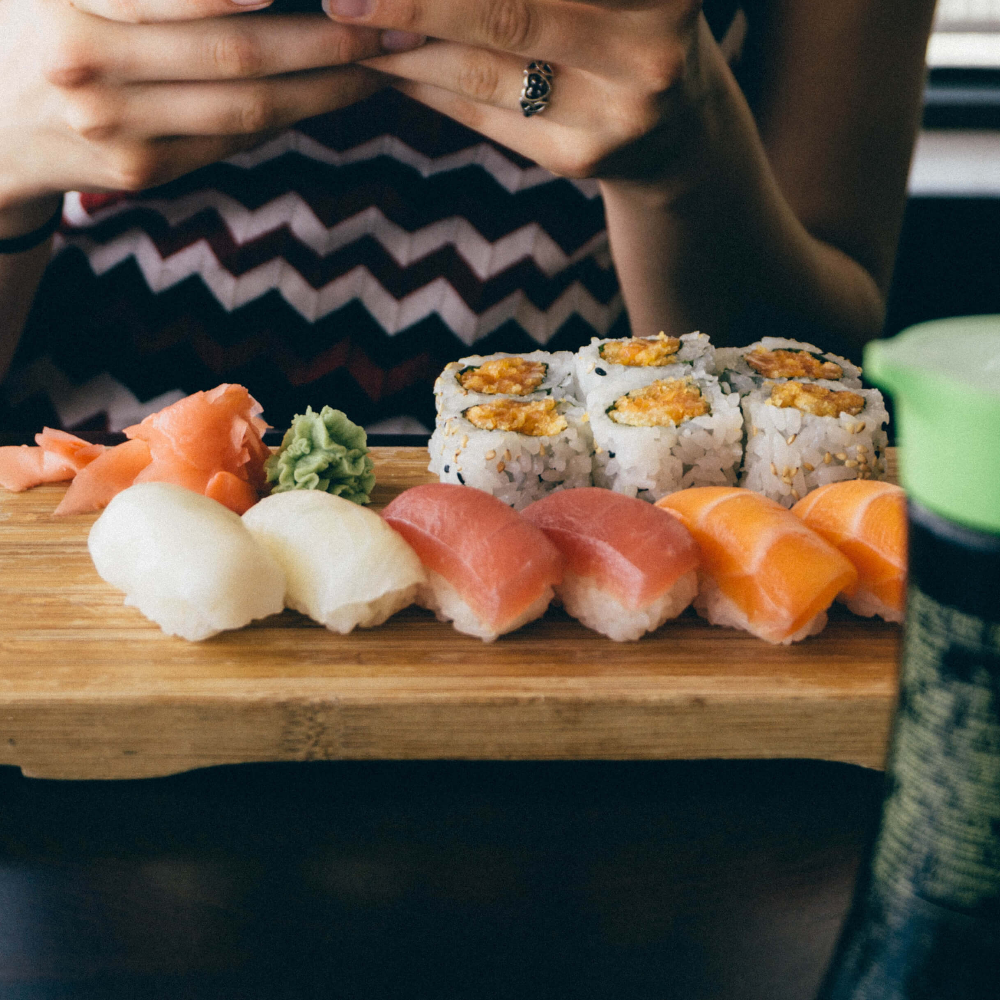
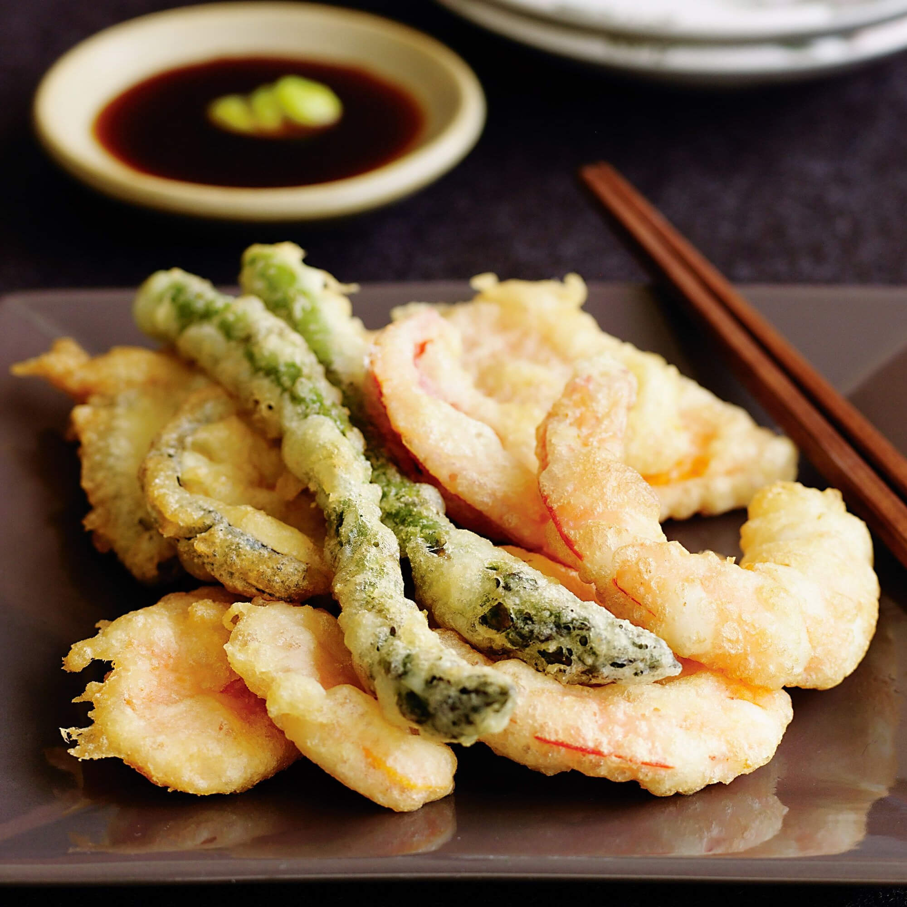
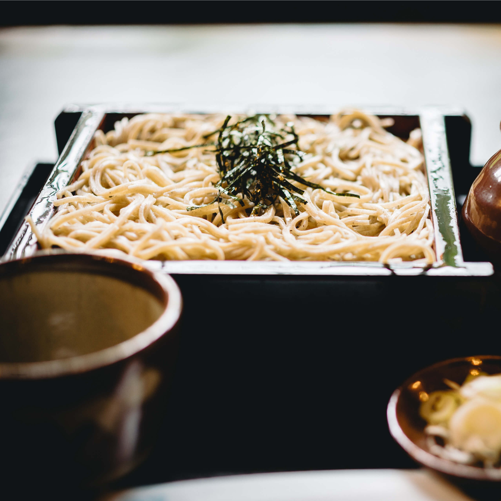

Dining?
Tokyo is one of the world's most exciting dining destinations. The city features a wide range of both local and regional Japanese cuisine in addition to all types of international fare. Its top restaurants have accrued more Michelin stars than both Paris and New York combined. But good food can be found at every price range from cheap hole-in-the-wall joints to expensive high-class restaurants with every budget in between.
Here, we will introduce some special ones that you are going to try in Tokyo.
Tokyo Specialties
|

|
Nigiri-zushiThe most popular type of sushi today, nigiri-zushi originated as a fast-food dish in Tokyo. Consisting of a piece of seafood put onto a small ball of rice, it takes much less time and effort to prepare than more traditional sushi dishes. Nigiri-zushi are served at all sushi restaurants from inexpensive conveyor belt sushi to Michelin-starred restaurants. The Tsukiji Outer Market is one of the best places to eat fresh sushi. Check out "20 Best Sushi Restaurant in Tokyo". |
TempuraAnother of Japan's most famous dishes, tempura also underwent major development in the capital city. Before the Edo Period, mainly vegetables were used for tempura, but Edo cooks started to deep fry seafood from Edo Bay in tempura batter, resulting in the more varied dish we know today. A visit to a specialized tempura restaurant (tempura-ya) is the recommended way to enjoy tempura. Check out "5 Best Tempura Restaurant in Tokyo". |

|
|

|
SobaSoba noodles (buckwheat noodles) are a popular dish in many regions of Japan. In Tokyo, they were particularly popular during the Edo Period, and can be found all across the city today, including at standing soba eateries and establishments specialized in soba (soba-ya). The dipping sauce used in Tokyo is traditionally relatively thick, and diners are encouraged to dip their noodles into it only lightly. Check out "5 Best Soba Restaurant in Tokyo". |